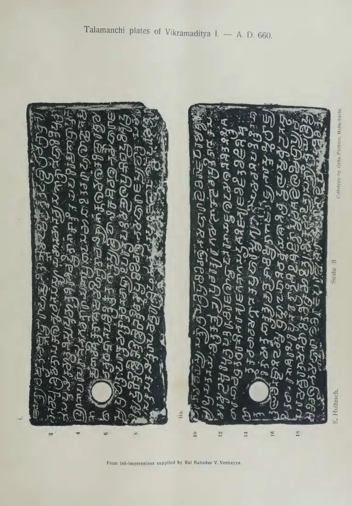
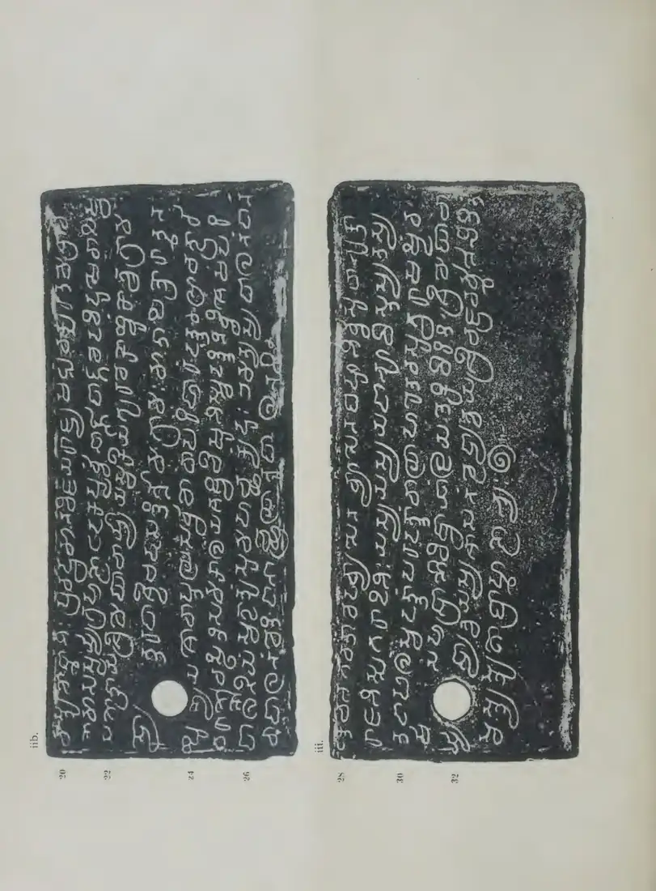

Talamanchi plates of Vikramâditya I
TALAMANCHI PLATES OF VIKRAMADITYA I.; A.D. 660.
BY PROFESSOR E. HULTZSCH, PH.D.; HALLE (SAALE).
This inscription was first published by Messrs. A. Butterworth and V. Venugopal Chetti in their Nellore District Inscriptions, p. 189 ff. According to p. 192 of the same work, the plates were “discovered about 12 years ago by a servant of Adapalli Venkata Reddi of Párlapalli
1 Read गुणिनो.
2 Read °खाजयो:.
3 Read आसीने.
4 Read °नगरात्परमं.
5 Read °मात्यं.
6 The engraver had originally written °वाटकेन.
7 The engraver originally wrote °जस्थलस्थलं, but cancelled the first स्थ. Read °विवर्जितं; after the त an I has been cancelled.
8 Read °शाकाब्दे.
9 The reading of this word is very uncertain; read perhaps ब्रह्मवर्चीं.
10 Read शतब्राह्मं.
11 Read °भूमिपालैम्युनुनीक्तधर्मगौ-.
12 Read °पालनीय इति.
13 Read बलिं. 14 Read °त्पत्त्या.
15 The engraver seems to have begun to write तात्रं, but the d-stroke has been left unfinished; read °ब्राह्मणेरवस्यं,
while ploughing some land known as Talamanchipádu in Talamanchi of Nellore taluk1 where a flourishing village is said to have once stood.” They “have been sent to the Madras Museum at the request of the owner.” I re-edit the inscription from three sets of ink-impressions, kindly prepared at my request by Rai Bahadur V. Venkayya, M.A., who describes the original as follows:—
“Three copper-plates, of which the first and last are engraved on their inner side only. They measure in breadth. The height of the plates is not uniform. Generally they are higher in the margins than in the middle.
| Height in the margins. | Height in the middle. | |
|---|---|---|
| 1st plate: | ||
| 2nd plate: | ||
| 3rd plate: | & |
Through circular holes bored on the left margin of each plate passes an oval ring measuring by . It is nearly thick. The ends of the ring are secured in the base of a seal, which is also oval and measures 1" by . The emblems on the seal, which appear to have been engraved on a countersunk surface, are much worn, but show a lump in the middle—perhaps meant to represent a boar. The total weight of the plates with ring and seal is 80 tolas.”
The writing on the plates is well preserved, excepting a few letters near the margins of plate i. and plate ii. a. The alphabet resembles that of two other grants of Vikramáditya I.2 The upadhmániya is used once (l. 24), a final form of m twice (ll. 24, 27), and one of n once (l. 17). The three Draviđian letters l, l and r, the second of which has the same shape as the upadhmániya, occur in the two village names Elasatti (l. 23) and Kołchuńko[nřa] (l. 22). The language is Sanskrit. There are four well-known Anushtubh verses: one at the beginning and three near the end; the remainder of the inscription is in prose.
The document was issued in the sixth year of the reign (l. 20) of the (Western) Chalikya (l. 5) Vikramáditya (I.), the son of Satyáśraya (i.e. Pulakésin II.), grandson of Kirtivarman (I.) and great-grandson of Polikesin (I.). Each of these four kings receives the same laudatory epithets as in other published grants of the same period. The new inscription records the grant of the village of Elasatti,3 north of Kołchuńko[nřa], to Śrimégháchárya (ll. 22 and 31 f.), the preceptor (guru) of Vikramáditya I., and was written by Vajravarman of the Vaidya family.
The historical importance of the plates lies chiefly in the date of the grant (l. 20 f.), regarding which Prof. Kielhorn kindly contributes the Postscript on p. 102 below. On the strength of the latter I have added the date “A.D. 660” to the title of this article and to the heading of the accompanying Plate.
TEXT.4
First Plate.
1 जयत्या[विष्कृतं विष्णो]व्वराहं क्षोभिताण्[वं] [1*] दक्षि[णो]न्नतदंष्ट्राग्र-
विश्रान्तभु-
1 On the map prefixed to the Nellore District Inscriptions, Talamanchi is marked by the figure '32' on the north of Nellore town.
2 Journ. Bombay Br. R. A. S. Vol. XVI. pp. 235 and 238.
3 Messrs Butterworth and Venugopal Chetti are unable to identify this village; see Nellore District Inscriptions, Preface, p. vi.
* From three sets of ink-impressions.
2 वन वपुः [॥ १*] श्रीमतां सकलभुवनसंस्तूयमानमानव्यसगोत्राणां हारितिपुत्रा-
3 णां सप्तलोकमातृभिस्पममातृभिरभिवर्द्धितानां कार्तिकेयपरिरक्षणप्राप्तक-
4 ल्याणपरंपराणां भगवन्नारायणप्रसादसमासादितवराहलाञ्छनेक्ष-
5 णक्षणवशीकृताशेषमहीभृतां चलिक्यानां कुलमलंकरिष्णोरश्रमे-
6 धावभृथस्नानपवित्रीकृतगात्रस्य श्रीपोलिकेशिवल्लभमहाराज-
7 स्य प्रपौत्रः 1पराक्रमाक्रांत्वनवास्यादिपरनृपतिमण्डलप्रणिबद्धविशुद्ध-
8 2[वि]शुद्धकीर्त्तेश्श्रीकीर्त्तेश्श्रीकीर्त्तिवम्प्रपृथिवीवल्लभमहाराजस्य पौत्रः समर-
9 [सं]सक्तसकलोत्तराप[थे]श्वरश्री[हर्षवर्द्धनपरा]ज[योप]ल[ब्ध]परमेश्वरा-
Second Plate ; First Side.
10 [पर]नामधेयस्य सत्याश्रयश्रीपृथिवीवल्लभमहाराजाधिराजपरमेश्व[र]-
11 [स्य] प्रियतनयः3 चित्रकण्ठाख्यप्रवरतुरंगमेणैकेनैव प्रतीतानेकस-
12 मरमुखेषु रिपुनृपतिरुधिरजलास्वादनरनायज्वलदमलनिशितनिस्त्रिंश-4
13 धारया च धृतधरणीभरभुजगभोगसदृशनिजभुजविजितविजिगीषुः5
14 आत्मकवचावमग्नानेकप्रहारस्वगु[रोधिश्रय]मवनिपतित्रितया-
15 6न्तरितांमात्मसात्कृत्य 7क्यतैकाधिष्ठितागे[षरा]ज्यभरस्तस्मिन्नाज्य-
16 त्रये विनष्टानि देवस्वब्रह्मदेयानि धर्मयशोभिवृद्धये समुखेन स्था-
17 पितवान् रणशिरसि रिपुनरेन्द्रान्दिशि दिशि जित्वा स्ववंशजां लक्ष्मी
प्राप्य च
18 परमेश्वरतामनिवारितविक्रमादित्यः8 विक्रमादित्यसत्याश्रयश्रीषु-
19 [थि]वीवल्लभमहाराजाधिराजपरमे[श्वरस्वब्धा]ना[ज्ञा]प[यति] [॥*] विधित-9
Second Plate ; Second Side.
20 [म]स्तु 10भोस्साभिः प्रवर्द्धमानविजयराज्यषट्टुंवत्सरतमे11 श्राव-
21 णमाससूर्य्यग्रहणे12 उदकपूर्व्वं साङ्गोपाङ्गवेदविदुषे वासिष्ठ-
22 सगोत्राय श्रीमेघाचार्य्याय स्वकीयगुरवे कोऽ५चुंको[न्ऽ५]ग्राम-
23 स्योत्तरपार्श्वे13 एकसत्तिर्नाम ग्रामः14 मातापित्रीरात्मन-
24 ×पुण्ययशोवाप्तये सर्व्ववोधापरिहारे15 दत्तम् [।*] आचन्द्रार्क-
1 Read °क्रान्.
2 Read °तनयश्चित्र.
3 Read °पुरात्म.
4 Read कृतैकाधिष्ठिताशेष.
5 Read वी.
6 Read °पार्श्व.
7 Cancel the second °विशुद्ध° and the second °कीर्त्तेश्श्री°; read °कीर्त्तिवर्म.
8 Instead of °रनाय° read °रसनायमान.
9 Cancel the anusvāra of तां and read °सारकृत्वा.
10 Read °दित्यो.
11 Read °षष्ठसंवत्सरे.
12 Read ग्रामी.
13 Read विदित.
14 Read °ग्रहण.
15 Read ससर्व्वबाधापरिहारी दत्तः.
Plate 1 is bound after this page.
Plate 2 is bound after this page.
25 धरार्ण्वस्थितिसमकालं यशश्चिचीपुभिस्वदत्तिनिर्विशेषं परि-
26 पालनीयं [॥*] स्वन्दातुं सुमहच्छक्यं दुःखमन्यस्य पालनं [*] दानं
27 वा पालनं वेति दानाच्छेयोनुपालनमिम्' [॥ २*]
Third Plate.
28 उक्तं च भगवता वेदव्यासेन व्यासेन2 [॥*] बहुभिर्वसुधा भुक्ता
29 राजभिस्सगरादिभिः [*] यस्य यस्य यदा भूमिस्तस्य तस्य
30 तदा फलं [॥ ३*] सदत्तां परदत्तां वा यो हरित वसुन्धरा[म् *] षष्टिं व-
31 र्षसहस्राणि विष्ठायां जायते क्रिमिरिति । [8*] श्रीमेघाचा-
32 र्यस्यान्वयस्य शासनं वैद्यान्वयश्रीवज्रवर्मणा लिखितं [॥*]
33 स्वस्यस्तु गोब्राह्मणेभ्यः [*] ओ3 ॥—
TRANSLATION.
[ Verse 1 contains an invocation of the boar-incarnation of Vishnu.]
(Line 2.) The great-grandson of the glorious Polikēsi-Vallabha-Mahârâja, whose body was purified by bathing at the end of a horse-sacrifice, (and) who adorned the family of the glorious Chalikyas;4
(L. 7.) The grandson of the glorious Kirtivarma-Prithivivallabha-Mahârâja, whose pure fame was established in the territories of hostile kings, such as Vanavāsi, which had been subdued by (his) valour;
(L. 8.) The dear son of Satyâśraya-Śrîprithivivallabha-Mahârâjâdhirâja-Paramēśvara,5 who acquired the surname of 'supreme lord' (paramēśvara) by defeating the glorious Harshavardhana, the lord of the whole northern country, who had encountered (him) in battle;
(L. 11.) He who, at the head of many famous battles, (assisted) by none but (his) noble steed named Chitrakaṇṭha and by the edge of (his) glittering, spotless and sharp sword which behaved like a tongue in licking the blood of hostile kings, conquered would-be conquerors by his own arms which resembled the coils of the serpent who carries the burden of the earth; into whose own armour many blows had plunged; who, having gained for himself the royalty of his father, which had been concealed by the triad of kings,6 caused the burden of the whole kingdom to be governed by (himself) alone; who, for the increase of (his) merit and fame, by his own mouth confirmed the property of temples and the grants to Brâhmaṇas which had recovered at the head of battles the royalty belonging to his family from the hostile kings of every quarter, and after he had acquired the title of 'supreme lord' (paramēśvara); Vikramâditya-Satyâśraya-Śrîprithivivallabha-Mahârâjâdhirâja-Paramēśvara commands all people (as follows):—
(L. 19.) "Be it known to you (that), in the sixth year of (Our) reign of growing victory, at an eclipse of the sun in the month of Śrâvaṇa, the village named Elasatti on
1 Read °नमिति.
2 The d of व्या is expressed twice.
3 Expressed by a symbol.
4 The usual epithets of this family (ll. 2-5) are omitted in the translation.
5 I.e. Pulakēsin II.
6 Viz. the Chôja, Pândya and Kêrala. Compare one of the epithets applied to Vikramâditya I. in the grants of his son Vinayâditya, above, Vol. V. p. 202, note 16.
the northern side of the village of Kolchumko[nra] has been given by Us, with libations of water, with exemption from all molestation, to Our own preceptor (guru) Śrimēghāchárya of the Vâsishtha gôtra, who knows the Vêdas with (their) Añgas and Upângas, in order that (Our) mother and father and Ourself might obtain merit and fame. As long as the moon, the sun, the earth and the oceans shall exist, (this grant) should be protected without distinction from their own gifts by those who desire to accumulate fame.”
[Verses 2-4 contain the usual admonitions to future rulers.]
(L. 31.) (This) edict (in favour) of the family of Śrimēghāchárya was written by the illustrious Vajravarman of the Vaidya family. Let there be welfare to cows and Brâhmaṇas! Oñ.
POSTSCRIPT.
BY PROFESSOR F. KIELHORN, C.I.E.; GÖTTINGEN.
The inscription edited above by Prof. Hultzsch is dated in the 6th year of the reign of the W. Chalukya Vikramâditya I., at the time of a solar eclipse in the month Śrâvaṇa. From page 2 of Appendix II. to Vol. VIII. of this Journal it will be seen that this date must necessarily fall between A.D. 635 and 685; and from what we know to be the general rule regarding eclipses that are quoted in dates, we may conclude that the eclipse here referred to most probably was one that was visible at Bâdâmi, the capital of the W. Chalukyas, situated in about Long. 76° and Lat. 16°.
Now it so happens that during the fifty years from A.D. 635 to 685 there was, in both the pûrṇimânta and the amânta month Śrâvaṇa, only a single solar eclipse that could have been at all visible at Bâdâmi, viz. the eclipse which took place 3 h. 5 m. after mean sunrise of Monday, the 13th July A.D. 660. That eclipse, an annular one, was fully visible at Bâdâmi, and the 13th July A.D. 660 was the 15th of the dark half of the pûrṇimânta Śrâvaṇa. We may compare especially the solar eclipse in the date of the Paṭṭadakal duplicate pillar inscription of the reign of the W. Chalukya Kîrtivarman II. (No. 48 of my Southern List), of the 25th June A.D. 754, which likewise took place in the pûrṇimânta Śrâvaṇa; and to show that in early times the pûrṇimânta scheme of the months was prevalent in Southern India, we may also cite the solar eclipse in the date of No. 9 of the List, which took place in the pûrṇimânta Bhâdrapada, and the solar eclipse in the date of No. 551 of the List, which took place in the pûrṇimânta Phâlguna.
Monday, the 13th July A.D. 660 (in Śaka-sañvat 582) would thus be in every way a suitable equivalent of our date; that it is its true equivalent is rendered more than probable by the date of the Nerûr plates of the queen Vijayabhatṭârikâ (No. 23 of my Southern List). That date corresponds to the 23rd September A.D. 659, and is of the 5th year of a reign of which hitherto it appeared doubtful whether it was the reign of Vikramâditya's eldest brother Chandrâditya or of Vikramâditya himself. Since we now have a date in A.D. 660 which would be a most proper equivalent for a date of the 6th year of the reign of Vikramâditya I., the date in A.D. 659 must surely be definitely assigned to the 5th year of the same reign, and the two dates in my opinion must be taken to prove that Vikramâditya I. commenced to reign between some time in September A.D. 654 and July A.D. 655.1
1 Dr. Fleet, in his Dynasties, p. 363, arrived at the conclusion that “we shall probably be very close to the mark, if we place the formal commencement of his reign somewhere in the autumn of . . . A.D. 655.”

